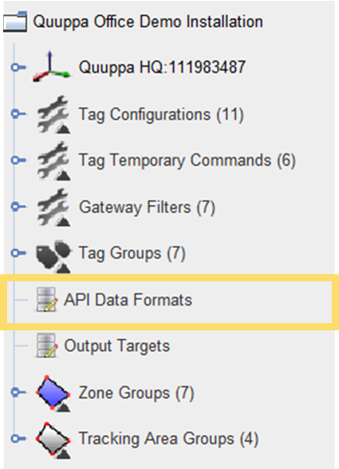
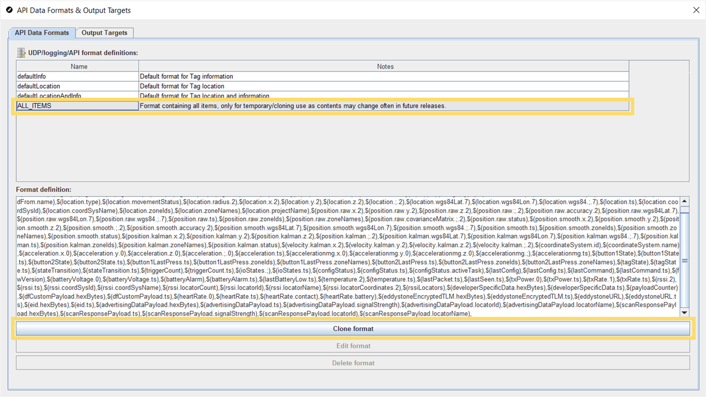
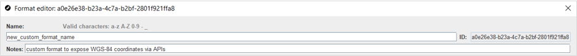
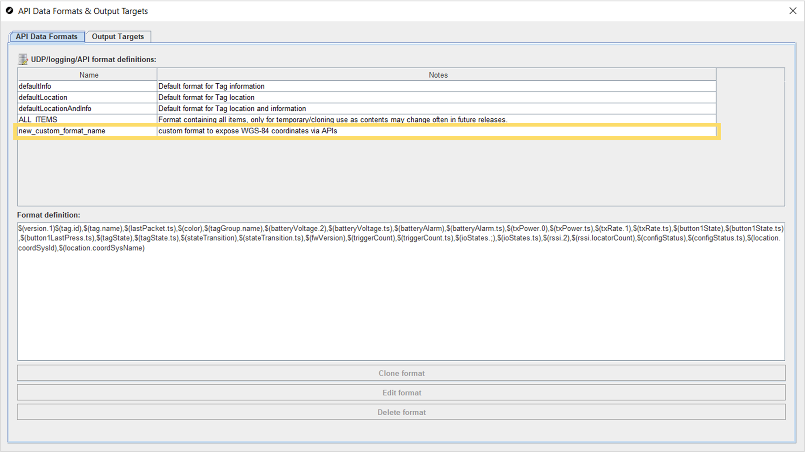
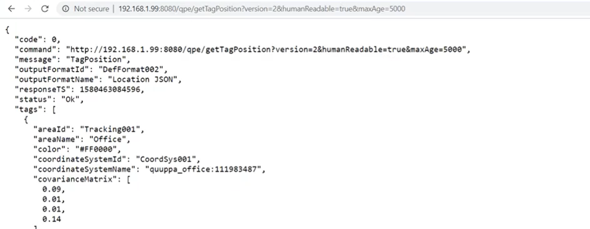

Expose WGS-84 Coordinate Data Through API
To access the WGS-84 coordinates through the API, you will need to create a custom format to expose the coordinate data. Follow the instructions below to do so.
-
In the QSP object tree, click on API Data Formats to open
the API Data Formats & Output Targets editor.

-
In the editor, select ALL_ITEMS and click on the
Clone format button to create a duplicate for you to
edit.

-
In the window that opens, give the new format a name and add a
description to the notes field that will help you identify this format
later.

-
Edit the format definition, removing everything but the items included in the
defaultLocation format and those related to WGS-84
coordinates. If needed, you can also leave the defaultInfo
items into your new format.

In the image above, you can see that the ALL_ITEMS format definition has been edited to just include the following:
$(version.1)$(tag.id),$(tag.name),$(color),$(tagGroup.name),$(location.type),$(location.movementStatus),$(location.radius.2),$(location.;.2),$(location.ts),$(location.coordSysId),$(location.coordSysName),$(location.zoneIds),$(location.zoneNames), $(location.wgs84Lat.7),$(location.wgs84Lon.7),$(location.wgs84.;.7),$(position.raw.wgs84Lat.7),$(position.raw.wgs84Lon.7),$(position.raw.wgs84.;.7),$(position.smooth.wgs84Lat.7),$(position.smooth.wgs84Lon.7),$(position.smooth.wgs84.;.7),$(position.kalman.wgs84Lat.7),$(position.kalman.wgs84Lon.7),$(position.kalman.wgs84.;.7)These are the items that are included in the defaultLocation format definition together with those available for WGS-84 at the time of writing. We always recommend starting with the ALL-ITEMS list that is available in the latest QSP version as we are constantly working on improving our product and the latest software version will include all the latest options.
Tip: You can also copy the ALL_ITEMS format definition into a separate editor for easier editing, before copying the edited content back into this QSP window. - Once you are done, click the OK button at the bottom of the window to save the edits.
-
The customised format will now be visible in the UDP/logging/API
format definitions table.

- Close the API Data Formats & Output Targets editor.
- Associate the project with a key (if not already associated) and submit the project.
- Open the QPE Web Console and perform a file sync by clicking the Do File Sync button.
- Open the API Documentation from the link at the bottom of the QPE Web Console page and navigate to the Get Tag Data section.
-
Open the example by clicking the Request link. This will
open up the default Location JSON example.

-
To show the customised format, add the custom format name to the request,
e.g.:
http://localhost:8080/qpe/getTagData?format=new_custom_format_name&humanReadable=true&maxAge=5000 - Refresh the page to show the updated format.